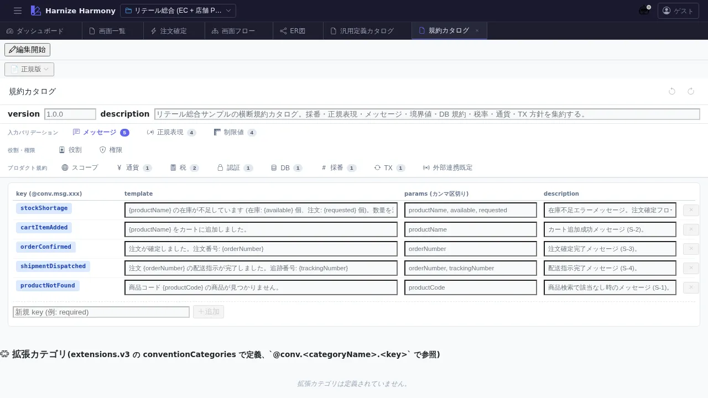

横断規約カタログ
対象画面:
ConventionsCatalogView(frontend/src/components/conventions/ConventionsCatalogView.tsx) ルート:/w/:wsId/conventions/catalog種別: シングルトンタブ
概要
プロジェクト横断の規約 (Conventions) を kind 別にカタログ表示する画面。naming-rule / validation-rule / lifecycle-rule / error-handling-rule / expression-evaluation 等のフレームワーク横断ルールを一覧し、各規約の参照箇所 (どの table / screen / process-flow で使われているか) を確認できる。
到達経路
- HeaderMenu → 「規約」 → 「規約カタログ」
- 直接 URL:
/w/<wsId>/conventions/catalog
画面構成

主要エリア
- ヘッダー — タイトル「横断規約カタログ」 + 新規追加ボタン
- 規約一覧 (kind 別グループ)
- 各規約: 名前 + 適用範囲 (scope) + 適用件数 + 「編集」「参照箇所」ボタン
- source: project / extension / framework の 3 階層別バッジ
- 検索 / フィルタ — 名前部分一致、scope / source / kind での絞込み
主要操作
| 操作 | 手段 | 結果 |
|---|---|---|
| 新規規約追加 | 「規約追加」 | kind 選択モーダル → 規約定義入力 |
| 規約編集 | 行の「編集」 | inline / modal で名前 / scope / pattern / 説明を更新 |
| 参照箇所表示 | 行の「参照箇所」 | この規約が適用される table / screen / process-flow 一覧 |
| 適用範囲フィルタ | scope フィルタ | global / per-table / per-screen 等で絞込み |
| 削除 | 行の右クリック → 「削除」 | 参照ありの場合は警告ダイアログ |
データ前提
- 空状態: 「規約が未登録です」プレースホルダ
- 意味のある状態: framework 組込み規約 (例:
validation-rule:require-not-empty) + project 固有規約 (例: retail のnaming-rule:table-snake-case) - 複数 source 混在: 同名の規約が
frameworkとprojectで重複する場合、project が優先
関連仕様書
docs/conventions/validation-rules.md— validation-rule kind の仕様docs/conventions/expressions.md— expression-evaluation kind の仕様docs/conventions/product-scope.md— scope (project / extension / framework) の階層
関連 skill
- なし (新規 skill 未整備、追加時はカタログから手動)
既知の制約・注意
- 規約変更の波及範囲は手動確認。validation-rule を変更しても自動再検証されないため、関連 table / screen を個別に開き直す必要あり (将来 reactive 検証検討余地)
- framework / extension 由来の規約は read-only (該当の拡張パッケージで変更)